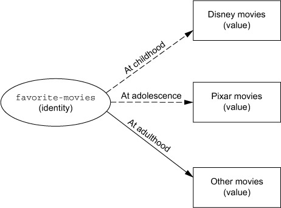

Parallelprogrammierung – Software Transactional Memory
Programmierparadigmen
Ziele
- Ursachen von Problemen nebenläufiger Programme erkennen
- Verstehen des Konzepts von Software Transactional Memory am Beispiel von Clojure
Zustand und Identität
- Viele Gründe für das Schreiben nebenläufiger/paralleler Programme:
- Hardware ist nebenläufig, Software muss dem folgen
- Aufwändige Berechnungen müssen parallel auf mehreren Rechnerkernen ausgeführt werden, um Zeitvorgaben einhalten zu können.
- Aktivitäten, die auf Ressourcen warten, sollten anderen Aktivitäten die Nutzung der verfügbaren Prozessoren ermöglichen.
- Benutzungsschnittstellen sollten auch während lang laufender Programme reagieren.
- Nebenläufigkeit führt offensichtlich dazu, dass mehrere Aktivitäten auf dieselben Daten.
- Dies führt zu massiven Problemen in Programmiersprachen, die die Konzepte Zustand und Identität vermengen (vgl. Hickey2011).
Unterscheidung zwischen Zustand und Identität
- Unter einer Identität wird ein konkretes Ding verstanden, das – einmal erschaffen – bleibt.
Ein solches Ding kann Zustände besitzen, die sich im Laufe der Zeit ändern können.

(Abbildung entnommen aus Rathore2016)
- Auch wenn sich das Alter (Zustand) einer Person (Ding) ändert, bleibt das Ding, die Person, dasselbe.
- Die Identität ändert sich nie, ihre Zustände vielleicht.
- Die Zustände werden durch Werte repräsentiert, die sich nicht ändern können sollten.
- Sarahs Adresse ist eine Identität, deren Wert 2018 anders lauten kann als 2020.
Vermengung von Zustand und Identität
- Problem in den gängigen objektorientierten Sprachen
- In der objektorientierten Programmierung kennt man den Begriff der Objektidentität.
- Die Objektidentität manifestiert sich in der Speicheradresse des Objekts.
- Ein Datum wird wie ein Hauptbuch mit nur einer einzigen Zeile behandelt.
- Jede Schreiboperation zerstört die Historie.
- Das Problem wird nicht erst durch Nebenläufigkeit virulent:
- Bedenke das Problem der Verweissemantik z. B. in den objektorientierten Sprachen.
- Wurzel des Übels ist die Änderbarkeit (mutability) von Variablen.
Robert C. Martin: The failure of state
- Video: Functional Programming – The Failure of State
- Ausschnitte:
- 34:34 - fewer concurrency issues
- 36:12 - Moore's law bis 43:47
- 49:44 - OO = procedure + state bis 50:56
- 53:57 - impose discipline on the change of state bis 55:12
- Ohne Zustandsänderungen gibt es keine Probleme mit Nebenläufigkeit.
- Wo Zustände nicht vermeidbar sind, ist disziplinierter Umgang mit
Zustandsänderungen erforderlich:
- Nutzung des Transaktionskonzepts - Software Transactional Memory (STM)
- Nutzung von Sperren ist hoch problematisch (Goetz2006).
- Programmierer können damit nicht umgehen.
Refs und Software Transactional Memory in Clojure
Anlegen von Verweisen (references) und Zugriff auf ihren Inhalt
- Normale Objekte in Clojure sind nicht änderbar (immutable).
Es gibt spezielle Sprachkonstrukte (
ref) zur Erzeugung einer änderbaren reference:(def aktueller-titel (ref "Knockin' On Heaven's Door")) ;; => 'user/aktueller-titel
- Eine reference kapselt ihren internen Zustand.
Für den Zugriff auf den Inhalt dient
deref:(deref aktueller-titel) ;; => "Knockin' On Heaven's Door"
oder
@aktueller-titel ;; => "Knockin' On Heaven's Door"
- Das Clojure-Konzept spiegelt die Realität wider:
- Ein Titel (Knockin' On Heaven's Door) ist ein unveränderliches Ding, das sich auch nicht verändert, wenn das Abspielen beendet ist.
- Aber
aktueller-titelist der Verweis (reference) auf ein Ding, das sich ändern kann.
Änderungen von Verweisen
- Sprachkonstrukt
ref-set Hören eines neuen Titels:
(ref-set aktueller-titel "Walking Aimlessly") ;; => java.lang.IllegalStateException: No transaction running
- Weil Verweise änderbar sind, muss die Änderung geschützt werden.
- Das passiert häufig durch Sperren.
- In Clojure kann man Transaktionen benutzen.
Zur Klammerung einer Transaktion dient das Sprachkonstrukt
dosync:(dosync (ref-set aktueller-titel "Walking Aimlessly")) ;; => "Walking Aimlessly"
- Der Verweis
aktueller-titelzeigt nun auf einen anderen Titel.
Transaktionseigenschaften
- Ähnlich wie Datenbanktransaktionen erlaubt STM, Lese- und Änderungsoperationen auf Verweisen transaktional zu behandeln.
- Eigenschaften derartiger Transaktionen:
- Änderungen sind atomar.
- Bei Änderungen an mehr als einem Verweis werden diese nur vollständig oder garnicht abgearbeitet.
- Änderungen sind konsistent.
- Verweise können Validierungsfunktionen spezifizieren. Wenn eine dieser Funktionen fehlschlägt, schlägt die ganze Transaktion fehl.
- Änderungen sind isoliert.
- Nebenläufige Transaktionen beeinflussen sich nicht. Insbesondere werden keine Teiländerungen sichtbar.
- Datenbanktransaktionen haben zusätzlich noch die Eigenschaft der Dauerhaftigkeit (das "D" in "ACID"). Dies gilt für STM-Transkaktionen, die sich im Arbeitsspeicher abspielen, nicht.
Beispiel
user> (def aktueller-titel (ref "Knockin' On Heaven's Door")) ;; => #'user/aktueller-titel user> (def aktueller-interpret (ref "Bob Dylan")) ;; => #'user/aktueller-interpret user> (dosync (ref-set aktueller-titel "Walking Aimlessly") (ref-set aktueller-interpret "Anna Ternheim")) ;; => "Anna Ternheim" user> @aktueller-titel ;; => "Walking Aimlessly" user> @aktueller-interpret ;; => "Anna Ternheim" user>
- Da die Änderungen in einer Transaktion ablaufen, kann kein inkonsistenter Zustand von anderen Threads gesehen werden.
- Man beachte: Es gibt keine expliziten Sperren.
Verwendung von alter für Änderungsoperationen
- Das oben gezeigte Beispiel ist besonders simpel, da die Änderungen unabhängig von einem früheren Zustand sind.
- Im folgenden Beispiel (Miller2018) einer einfachen Chat-Applikation ist das anders. (Die vollständige Clojure-Datei kann daungelohdet werden.)
Mit
(defrecord Message [sender text]) ;; => user.Message
wird zunächst eine Message-Datenstruktur definiert.
Ein Exemplar der Struktur wird dann z. B. so erzeugt:
(->Message "Klara" "Hallo") ;; => {:sender "Klara", :text "Hallo"}Die Liste der Nachrichten wird dann als Verweis angelegt:
(def messages (ref ())) ;; => #'user/messages
Mit den bisher bekannten Mitteln könnte eine transnationale Funktion zum Hinzufügen einer Nachricht so definiert werden:
(defn add-message [msg] (dosync (ref-set messages (cons msg @messages)))) ;; => #'user/add-message
- Mit der Funktion
alterstellt Clojure eine komfortable Möglichkeit bereit, das Lesen des aktuellen Werts des Verweises und seine Veränderung in einem Schritt durchzuführen. altererwartet als Argumente einen Verweis (ref) eine Änderungsfunktion (update-fn) und optional weitere Argumente, die die Änderungsfunktion benötigt:
(alter ref update-fn & args...)- Der Rückgabewert von
alterist der neue Wert vonrefinnerhalb der Transaktion. - Wird die Transaktion erfolgreich beendet, nimmt
refseinen letzten Wert innerhalb der Transaktion an.
Die Funktion
add-messageunter Verwendung vonalter:(defn add-message [msg] (dosync (alter messages conj msg))) ;; => #'user/add-message
- Die
alter-Funktion ruft die Änderungsfunktion (hierconj) mit dem Wert des Verweises (hiermessages) als erstem Argument auf. Deshalb muss hierconjanstelle vonconsbenutzt werden. - Zum Vergleich:
(cons item list)
(conj list item) - Die Reihenfolge ist auch für eigene Änderungsfunktionen zu
beachten:
(my-update-fn thing-that-gets-updated & optional-other-args) Benutzung von
add-message:user> (add-message (->Message "Rosa" "Hallo")) ;; => ({:sender "Rosa", :text "Hallo"}) user> (add-message (->Message "Karl" "Hei")) ;; => ({:sender "Karl", :text "Hei"} {:sender "Rosa", :text "Hallo"})
Arbeitsweise von STM in Clojure
- Es wird eine Technik namens Multiversion Concurrency Control (MVCC) benutzt, die auch in Datenbanksystemen Verwendung findet.
- Eine Transaktion A erhält zu Beginn einen Zeitstempel (ganze Zahl).
- Transaktion A erhält Zugriff auf lokale Kopien von allen Verweisen, die sie benötigt.
- Alle Operationen auf einem Verweis während der laufenden Transaktion A wirken auf der lokalen Kopie. Die so entstehenden Werte heißen in-transaction values.
- Versucht Transaktion A mit
set/alterden Verweis zu aktualisieren und STM entdeckt, dass dies schon von einer anderen Transaktion gemacht wurde, wird Transaktion A zurückgesetzt und neu gestartet. - Wenn innerhalb eines
dosync-Blocks eine Exception ausgelöst wird, wird die Transaktion ohne Neustart abgebrochen. - Wenn Transaktion A erfolgreich abgeschlossen wird (commit), werden die in-transaction values nach außen sichtbar. Diese Änderungen werden mit dem Zeitstempel der Transaktion assoziiert.
Clojure dosync vs. Java synchronized
- Mit
synchronizedwerden implizit Sperren angefordert und freigegeben. - Betritt ein Thread einen
synchronized-Block, versucht er die zugehörige Sperre zu erlangen. Gelingt dies nicht, weil schon ein anderer Thread die Sperre hält, wird der Thread blockiert und wartet bis die Sperre wieder frei ist. - Mit
dosyncwird eine Code-Sequenz zur Ausführung als Transaktion bestimmt. - Eine solche Transaktion hat die oben genannten Eigenschaften:
- automatische Wiederholung bei Fehlschlag
- keine Sperren, kein Warten, keine Verklemmungen
Validierungsfunktionen für Verweise
- Vergleichbar mit Integritätsbedingungen in relationalen Datenbanken
können Verweise mit Validierungsfunktionen
ausgestattet werden:
(ref initial-state :validator validator-fn) Anwendung auf die Chat-Applikation:
(defrecord Message [sender text]) (def messages (ref ())) (defn valid-message? [msg] (and (:sender msg) (:text msg))) (def validate-message-list #(every? valid-message? %)) (def messages (ref () :validator validate-message-list)) (defn add-message [msg] (dosync (alter messages conj msg))) ;; Repl: user> (add-message "ungültig") IllegalStateException Invalid reference state user> @messages ;; => () user> (add-message (->Message "Kurt" "gültig")) ;; => ({:sender "Kurt", :text "gültig"})